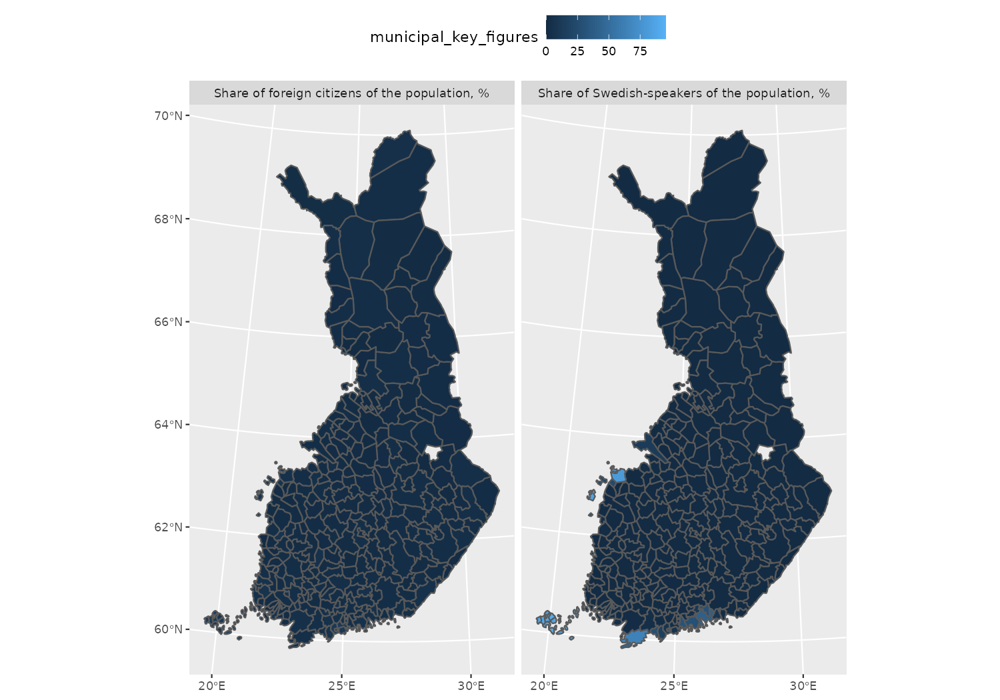
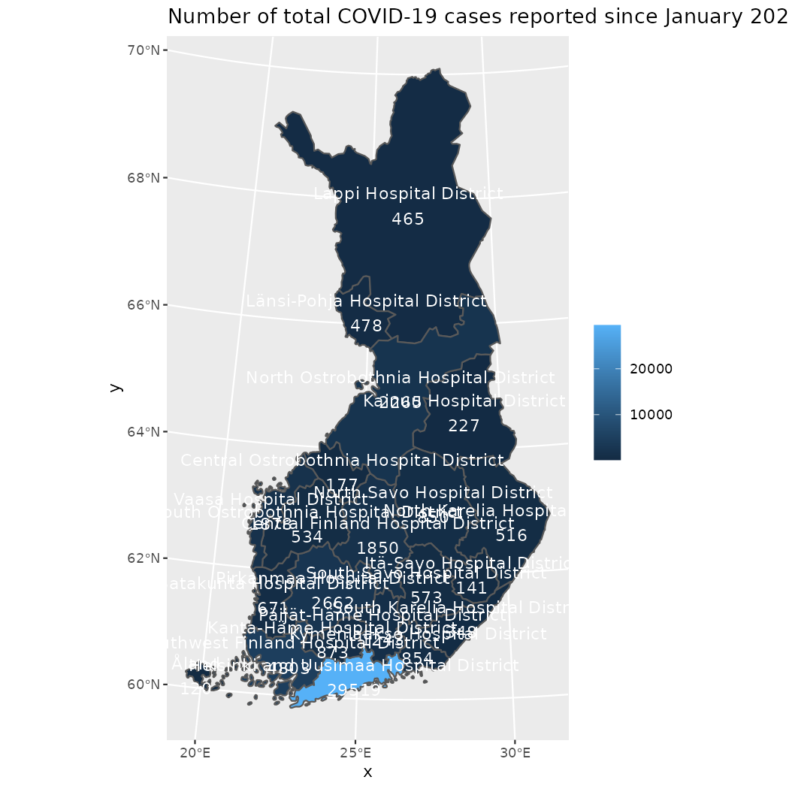
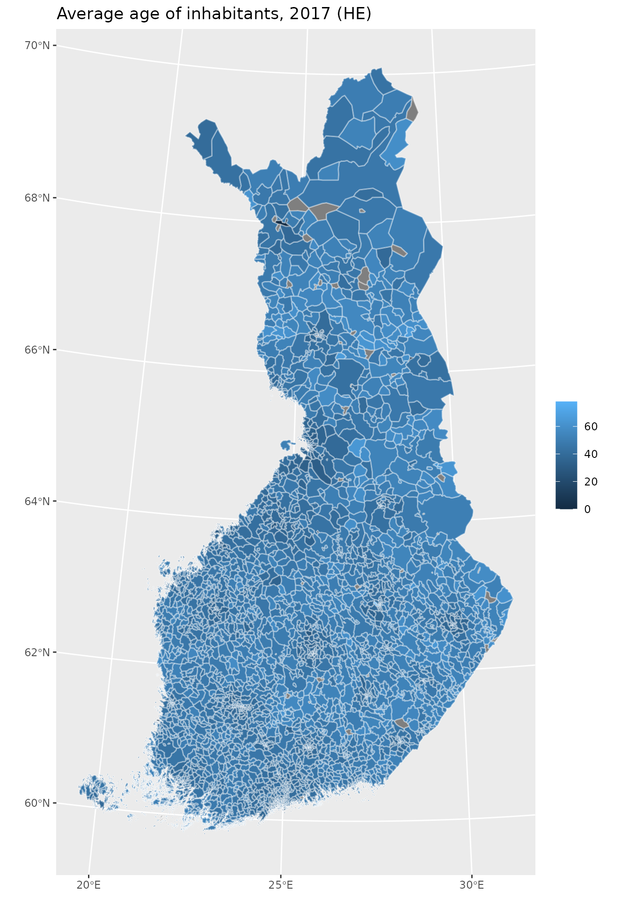

geofi_joining_attribute_data.RmdThis vignettes provides few examples on how to join attribute data from common sources of attribute data. Here we are using data from three different sources of which two are from Statistics Finland PxWeb-api, namely municipality key figures and Paavo (Open data by postal code area). Third is Covid-19 tests and confirmed cases in Finland.
Installation
geofi can be installed from CRAN using
# install from CRAN
install.packages("geofi")
# Install development version from GitHub
remotes::install_github("ropengov/geofi")Municipality data provided by get_municipalities()-function contains 77 indicators variables from each of 309 municipalities. Variables can be used either for aggregating data or as keys for joining attribute data.
In this first example we join municipality level data from Statistics Finland municipality key figures
library(geofi)
muni <- get_municipalities(year = 2019)
library(pxweb)
pxweb_query_list <-
list("Alue 2020"=c("*"),
"Tiedot"=c("*"),
"Vuosi"=c("2019"))
px_raw <-
pxweb_get(url = "https://pxnet2.stat.fi/PXWeb/api/v1/en/Kuntien_avainluvut/2020/kuntien_avainluvut_2020_aikasarja.px",
query = pxweb_query_list)
library(dplyr)
library(tidyr)
library(janitor)
library(sf)
px_data <- as_tibble(
as.data.frame(px_raw,
column.name.type = "text",
variable.value.type = "text")
) %>% setNames(make_clean_names(names(.))) %>%
pivot_longer(names_to = "information", values_to = "municipal_key_figures", 3:ncol(.))
px_data
#> # A tibble: 12,800 x 4
#> region_2020 year information municipal_key_fig…
#> <chr> <chr> <chr> <dbl>
#> 1 WHOLE COUNTRY 2019 degree_of_urbanisation_percent 86.4
#> 2 WHOLE COUNTRY 2019 population 5525292
#> 3 WHOLE COUNTRY 2019 population_change_from_the_previous_y… 0.1
#> 4 WHOLE COUNTRY 2019 share_of_persons_aged_under_15_of_the… 15.8
#> 5 WHOLE COUNTRY 2019 share_of_persons_aged_15_to_64_of_the… 62
#> 6 WHOLE COUNTRY 2019 share_of_persons_aged_over_64_of_the_… 22.3
#> 7 WHOLE COUNTRY 2019 share_of_swedish_speakers_of_the_popu… 5.2
#> 8 WHOLE COUNTRY 2019 share_of_foreign_citizens_of_the_popu… 4.8
#> 9 WHOLE COUNTRY 2019 excess_of_births_persons -8336
#> 10 WHOLE COUNTRY 2019 intermunicipal_migration_gain_loss_pe… 0
#> # … with 12,790 more rowsOnce we have the data in long format we can observe the region_2020-column.
count(px_data, region_2020)
#> # A tibble: 400 x 2
#> region_2020 n
#> <chr> <int>
#> 1 Äänekoski 32
#> 2 Äänekoski sub-regional unit 32
#> 3 Åboland-Turunmaa sub-regional unit 32
#> 4 Ähtäri 32
#> 5 Akaa 32
#> 6 Alajärvi 32
#> 7 Åland 32
#> 8 Ålands landsbygd sub-regional unit 32
#> 9 Ålands skärgård sub-regional unit 32
#> 10 Alavieska 32
#> # … with 390 more rowsThis is not obvious to all, but have the municipality names in Finnish among other regional breakdowns which allows us to combine the data with spatial data using municipality_name_fi-variable.
map_data <- right_join(muni, px_data, by = c("municipality_name_fi" = "region_2020"))Now we can plot a map showing Share of Swedish-speakers of the population, % and Share of foreign citizens of the population, % on two panels sharing a scale.
library(ggplot2)
map_data %>%
filter(grepl("swedish|foreign", information)) %>%
ggplot(aes(fill = municipal_key_figures)) +
geom_sf() +
facet_wrap(~information) +
theme(legend.position = "top")
in early 2021 we are still troubled by the COVID-19 and the health authorities are counting infections, deaths and vaccinated. Lets pull the daily data from API and compare the names of the health districts both in COVID-19 data and in municipality division from Statistics Finland.
if (FALSE){
library(readr)
cols(
Area = col_character(),
Time = col_date(format = ""),
val = col_double()
) -> cov_cols
thl_korona_api <- "https://sampo.thl.fi/pivot/prod/en/epirapo/covid19case/fact_epirapo_covid19case.csv?row=dateweek20200101-508804L&column=hcdmunicipality2020-445222L"
status <- httr::status_code(httr::GET(thl_korona_api))
xdf_raw <- read_csv2(thl_korona_api, col_types = cov_cols)
xdf <- xdf_raw %>%
# filter(!grepl("Kaikki", Alue)) %>%
rename(date = Time,
shp = Area,
day_cases = val) %>%
group_by(shp) %>%
arrange(shp,date) %>%
filter(!is.na(day_cases)) %>%
mutate(total_cases = cumsum(day_cases)) %>%
ungroup() %>%
group_by(shp) %>%
filter(date == max(date, na.rm = TRUE)) %>%
ungroup()
}
xdf <- structure(list(shp = c("Åland", "All areas", "Central Finland Hospital District",
"Central Ostrobothnia Hospital District", "Helsinki and Uusimaa Hospital District",
"Itä-Savo Hospital District", "Kainuu Hospital District", "Kanta-Häme Hospital District",
"Kymenlaakso Hospital District", "Länsi-Pohja Hospital District",
"Lappi Hospital District", "North Karelia Hospital District",
"North Ostrobothnia Hospital District", "North Savo Hospital District",
"Päijät-Häme Hospital District", "Pirkanmaa Hospital District",
"Satakunta Hospital District", "South Karelia Hospital District",
"South Ostrobothnia Hospital District", "South Savo Hospital District",
"Southwest Finland Hospital District", "Vaasa Hospital District"
), date = structure(c(18674, 18674, 18674, 18674, 18674, 18674,
18674, 18674, 18674, 18674, 18674, 18674, 18674, 18674, 18674,
18674, 18674, 18674, 18674, 18674, 18674, 18674), class = "Date"),
day_cases = c(0, 0, 0, 0, 0, 0, 0, 0, 0, 0, 0, 0, 0, 0, 0,
0, 0, 0, 0, 0, 0, 0), total_cases = c(120, 51047, 1850, 177,
29519, 141, 227, 873, 854, 478, 465, 516, 2265, 850, 1243,
2662, 671, 348, 534, 573, 4803, 1878)), row.names = c(NA,
-22L), class = c("tbl_df", "tbl", "data.frame"))
xdf %>%
count(shp)
#> # A tibble: 22 x 2
#> shp n
#> <chr> <int>
#> 1 Åland 1
#> 2 All areas 1
#> 3 Central Finland Hospital District 1
#> 4 Central Ostrobothnia Hospital District 1
#> 5 Helsinki and Uusimaa Hospital District 1
#> 6 Itä-Savo Hospital District 1
#> 7 Kainuu Hospital District 1
#> 8 Kanta-Häme Hospital District 1
#> 9 Kymenlaakso Hospital District 1
#> 10 Länsi-Pohja Hospital District 1
#> # … with 12 more rows
muni <- get_municipalities(year = 2021)
muni %>%
st_drop_geometry() %>%
count(sairaanhoitop_name_en)
#> sairaanhoitop_name_en n
#> 1 Åland 16
#> 2 Central Finland Hospital District 21
#> 3 Central Ostrobothnia Hospital District 10
#> 4 Helsinki and Uusimaa Hospital District 24
#> 5 Itä-Savo Hospital District 4
#> 6 Kainuu Hospital District 8
#> 7 Kanta-Häme Hospital District 11
#> 8 Kymenlaakso Hospital District 6
#> 9 Länsi-Pohja Hospital District 6
#> 10 Lappi Hospital District 15
#> 11 North Karelia Hospital District 13
#> 12 North Ostrobothnia Hospital District 29
#> 13 North Savo Hospital District 18
#> 14 Päijät-Häme Hospital District 12
#> 15 Pirkanmaa Hospital District 23
#> 16 Satakunta Hospital District 16
#> 17 South Karelia Hospital District 9
#> 18 South Ostrobothnia Hospital District 18
#> 19 South Savo Hospital District 9
#> 20 Southwest Finland Hospital District 28
#> 21 Vaasa Hospital District 13The names look identical so we can join the two datasets and plot a map.
muni %>%
count(sairaanhoitop_name_en) %>%
left_join(xdf, by = c("sairaanhoitop_name_en" = "shp")) %>%
ggplot(aes(fill = total_cases)) +
geom_sf() +
geom_sf_text(aes(label = paste0(sairaanhoitop_name_en, "\n", total_cases)),
color = "white") +
labs(title = "Number of total COVID-19 cases reported since January 2020",
fill = NULL)
You can download data from Paavo (Open data by postal code area) using pxweb-package in a similar manner as in the first example.
library(pxweb)
# lets get all zipcodes and all variables
pxweb_query_list <-
list("Postinumeroalue"=c("*"),
"Tiedot"=c("*"))
# Download data
px_raw <-
pxweb_get(url = "https://pxnet2.stat.fi/PXWeb/api/v1/en/Postinumeroalueittainen_avoin_tieto/2019/paavo_1_he_2019.px",
query = pxweb_query_list)
px_data <- as_tibble(
as.data.frame(px_raw,
column.name.type = "text",
variable.value.type = "text")
) %>% setNames(make_clean_names(names(.)))
px_data %>%
filter(postal_code_area != "Finland")
#> # A tibble: 72,624 x 3
#> postal_code_area data paavo_open_data_by_postal…
#> <chr> <chr> <dbl>
#> 1 00100 Helsinki Keskusta - Etu… Inhabitants, total… 18284
#> 2 00100 Helsinki Keskusta - Etu… Females, 2017 (HE) 9613
#> 3 00100 Helsinki Keskusta - Etu… Males, 2017 (HE) 8671
#> 4 00100 Helsinki Keskusta - Etu… Average age of inh… 41
#> 5 00100 Helsinki Keskusta - Etu… 0-2 years, 2017 (H… 434
#> 6 00100 Helsinki Keskusta - Etu… 3-6 years, 2017 (H… 521
#> 7 00100 Helsinki Keskusta - Etu… 7-12 years, 2017 (… 711
#> 8 00100 Helsinki Keskusta - Etu… 13-15 years, 2017 … 274
#> 9 00100 Helsinki Keskusta - Etu… 16-17 years, 2017 … 185
#> 10 00100 Helsinki Keskusta - Etu… 18-19 years, 2017 … 264
#> # … with 72,614 more rowsBefore we can join the data, we must extract the numerical postal code from postal_code_area-variable.
px_data$posti_alue <- sub(" .+$", "", px_data$postal_code_area)
# Lets join with spatial data and plot the area of each zipcode
zipcodes19 <- get_zipcodes(year = 2019)
zipcodes_map <- left_join(zipcodes19,
px_data %>% filter(data == "Average age of inhabitants, 2017 (HE)"))
ggplot(zipcodes_map) +
geom_sf(aes(fill = paavo_open_data_by_postal_code_area_2019),
color = alpha("white", 1/3)) +
labs(title = "Average age of inhabitants, 2017 (HE)",
fill = NULL)